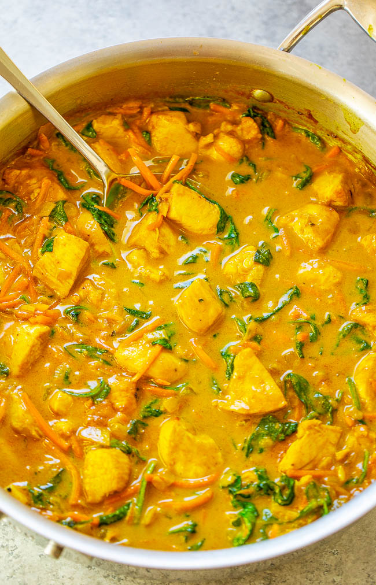

Yellow Curry

Ingredients
- 3 tablesoons olive oil
- 1 medium/large sweet Vidalia or yellow onion, diced small
- 1.25 pounds boneless skinless chicken bbreast, diced into bite-sized pieces
- 3 cloves of garlic, finely minced or pressed
- 2 to 3 teaspoons ground turmeric
- 2 teaspoons ground ginger or 1 tablespoon fresh ginger, finely chopped
- 2 teaspoons ground coriander
- 2 to 4 tablespoons curry paste
- 13.5 ounce can coconut milk
- 1.5 cups shredded carrots
- 2 to 3 cups fresh spinach, loosely packed
- .5 teaspoons freshly ground black pepper
- 1 to 2 tablespoons lime juice
- .25 to .33 cup fresh cilantro
- 1 to 4 tablespoons brown sugar
- salt
- rice
- To a large skillet, add the oil, onion, and saute over medium-high heat until the onion begins to soften.(about 5 minutes;stir intermittently)
- Add the chincken and cook for about 5 minutes, or until chicken is done; flip and stir often to endure even cooking.
- Add the garlic, turmeric, ginger, coriander, and cook for about 1 minute, or until fragrant; stir frequently.
- Add the curry paste, coconut milk, carrots, and stir to combine, Reduce the heat to medium, and allow mixture to gently boil for about 5 minutes, or until liquid volume has reduced as much as desired.
- Add the spinach, pepper, and stir until the spinach has wilted.
- Taste the curry and add the optional but recommended lime juice, the cilantro, optional light brown sugar, optional salt.